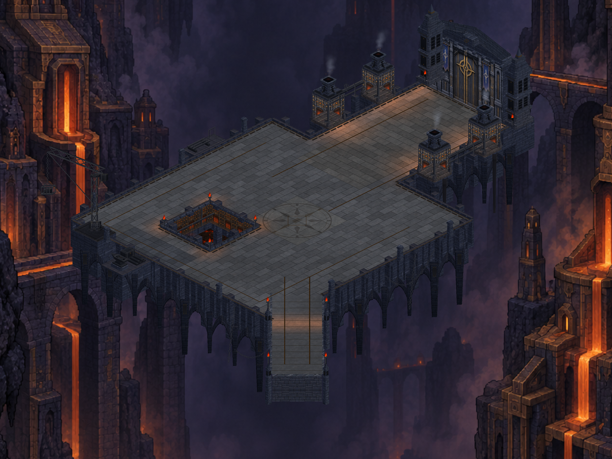
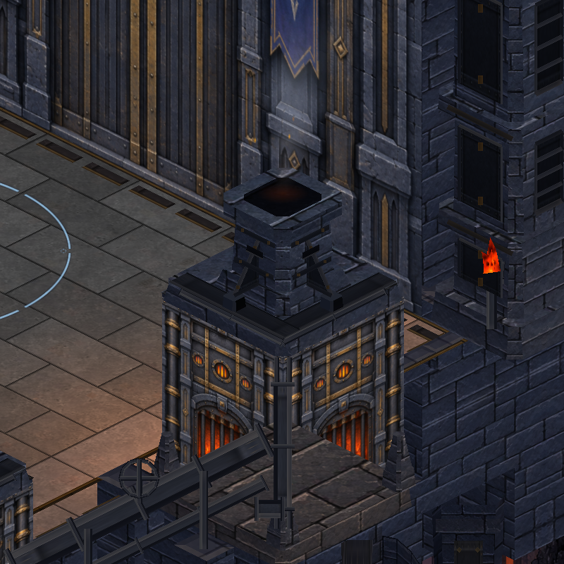

CRYPTFORGE / 29 EYLÜL 2026
Birleşik çevre paketi
Yeni bazalt yüzeyi, kapı panelleri, fırın çatı kaplamaları ve düzensiz biçimlerle yükselen duman. Dört çalışma aynı Unity sahnesinde birleşti.

Atmosfer hareketi
Unity'den alınan sekiz ardışık örnek kare. Duman hafif tutuldu; bu önizleme telefondaki performans veya hareket doğrulaması değildir.

Tüm karşılaştırmalar gerçek sahne görüntüleridir. Genel hedef görselin tamamlandığı iddia edilmez.
Üretim ve doğrulama · Görsel üretim promptu · Yeni taş kaynağı